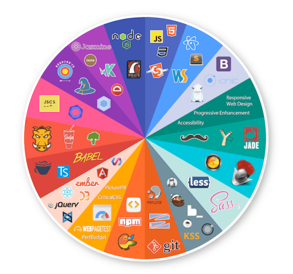
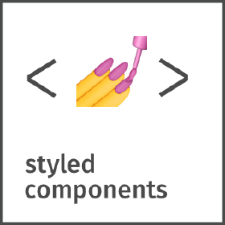

<!doctype html>
<html>
<head>
    <meta charset="utf-8">
    <meta name="viewport" content="width=device-width, initial-scale=1.0, maximum-scale=1.0, user-scalable=no">
    <link rel="stylesheet" href="reveal/css/reveal.css">
    <link rel="stylesheet" href="reveal/css/theme/kontur-light.css" id="theme">
    <!-- Theme used for syntax highlighting of code -->
    <link rel="stylesheet" href="reveal/css/highlight/idea-for-light.css">
    <link rel="stylesheet" href="reveal/css/highlight/darkula-for-dark.css">

    <script defer src="reveal/js/head.min.js"></script>
    <script defer src="reveal/js/reveal.js"></script>
    <script defer src="reveal/initialize.js"></script>
    <script defer src="reveal/js/d3.min.js"></script>
    <style>
		.img-center {
            position: absolute;
            left: 50%;
            top: 50%;
            transform: translate(-50%, -20%);
        }
        .img-center-wrapper {
            height: 75vh;
            min-width: 800px;
            position: absolute;
            left: 50%;
            top: 50%;
            transform: translate(-50%, -20%);
            background-color: white;
            text-align: center;
        }
    </style>
    <title>Программирование — скучно😟</title>
</head>
<body>

<div class="reveal">
<div class="slides">

<section data-markdown><script type="text/template">

# Программирование — скучно 😟

</script></section>

<section data-markdown><script type="text/template">

<div style="display: flex; justify-content: space-between;">
    
    <div style="margin-left: 30px;">
        <h3>Самохина Вероника</h3>
        <p>Обучаю фронтендеров в Контуре и студентов в университете</p>
    </div>
</div>

</script></section>

<section data-markdown><script type="text/template">

### Скучно — это когда нет новых вызовов

<ul>
    <li class="fragment" data-fragment-index="1">нет новых технологий <span class="fragment" data-fragment-index="4">**→ найди интересный туториал**</span></li>
    <li class="fragment" data-fragment-index="2">давно не было нового типа задач <span class="fragment" data-fragment-index="5">**→ open source, хакатоны**</span></li>
    <li class="fragment" data-fragment-index="3">не писал код _just for fun_ <span class="fragment" data-fragment-index="6">**→ контесты, соревнования**</span></li>
</ul>

</script></section>

<section data-markdown><script type="text/template">

## Но не все так просто...

</script></section>

<style>
    .timeline {
        position: absolute;
        left: -100px;
        right: -100px;
        height: 30px;
        background: linear-gradient(to right, #1b91ff, #0000ff);
        bottom: 170px;
    }

    .timeline br {
        display: none;
    }

    .line {
        position: absolute;
        height: 90px;
        top: -15px;
        left: 10%;
        width: 1px;
        background: #333;
    }
    .line:nth-of-type(2) {
        left: 24%;
    }

    .line:nth-of-type(3) {
        left: 38%;
    }

    .line:nth-of-type(4) {
        left: 52%;
    }

    .line:nth-of-type(5) {
        left: 66%;
    }

    .line:nth-of-type(6) {
        left: 80%;
    }

    .line:nth-of-type(7) {
        left: 94%;
    }

    .line span {
        position: absolute;
        right: 10px;
        bottom: 0;
        color: #2b2b2b;
    }

    .timeline img {
        position: absolute;
        height: 120px;
        top: -160px;
        max-height: none;
        max-width: none;
    }
    
    .timeline .dot {
        position: absolute;
        height: 15px;
        width: 15px;
        border-radius: 50%;
        top: 8px;
        background-color: red;
    }

    .line.now {
        background-color: red;
        left: 86%
    }

</style>
<section data-markdown><script type="text/template">

### Про меня

<div style="height: 400px"></div>
<div class="timeline">
    
    
    
    


    
    
    
    
    
    
    
    

    <div class="line"><span>2013</span></div>
    <div class="line"><span>2014</span></div>
    <div class="line"><span>2015</span></div>
    <div class="line"><span>2016</span></div>
    <div class="line"><span>2017</span></div>
    <div class="line"><span>2018</span></div>
    <div class="line"><span>2019</span></div>
    <div class="line now"></div>
    <span class="dot fragment" data-fragment-index="6" style="left: 12%"></span>
    <span class="dot fragment" data-fragment-index="6" style="left: 19%"></span>
    <span class="dot fragment" data-fragment-index="6" style="left: 30%"></span>
    <span class="dot fragment" data-fragment-index="6" style="left: 43%"></span>
    <span class="dot fragment" data-fragment-index="6" style="left: 46%"></span>
    <span class="dot fragment" data-fragment-index="6" style="left: 48%"></span>
    <span class="dot fragment" data-fragment-index="6" style="left: 54%"></span>
    <span class="dot fragment" data-fragment-index="6" style="left: 67%"></span>
    <span class="dot fragment" data-fragment-index="6" style="left: 71%"></span>
    <span class="dot fragment" data-fragment-index="6" style="left: 5%"></span>
</div>


</script></section>

<section data-markdown><script type="text/template">

### Опыт собеседований показал, что я такая не одна

Кто-то меняет команды, а кто-то учит новые технологии


***

### Резюме кандидата иногда:

```
Общий стаж: 3 года

Навыки:
HTML, CSS, JS, TS, React, Angular, Vue, Svelte,
Python, Machine Learning, Swift, Go, React Native, Java
```

</script></section>

<section data-markdown><script type="text/template">

## Что делать?


***

### Что делать

- если хочется поменять команду, но переживаешь, что слишком часто это делаешь?
- если хочется выучить новую технологию, но предыдущие 15 начатых и недоученных укоризненно смотрят?


***

### Проверить, все ли ты сделал там где ты сейчас?

***

### 1. Базовые скиллы

- JavaScript
- Алгоритмы
- Паттерны проектирования
- Регулярные выражения
- Чистый код и рефакторинг
- ...

<div class="fragment" data-fragment-index="1">
**Зачем:**
- без базовых знаний новые будут поверхностными
- базовые скиллы не устаревают
- это кросстехнологические знания
</div>


***

### 2. Обучи юного падавана

- Стажер/Джуниор на работе
- Наставник в HTMLAcademy
- ...

<div class="fragment" data-fragment-index="1">
**Зачем:**
- навык объяснять и другие полезные скиллы из области коммуникаций
- посмотреть свежим взглядом на свою отрасль
- глубже разобраться в технологиях
</div>


***

### 3. Сделай доклад/напиши статью

Посмотри на то, что сложно дается твоему падавану — это хороший источник тем для статей и докладов.

<div class="fragment" data-fragment-index="1">
**Зачем:**
- глубже разобраться
- научиться писать/выступать
- нетворкинг
</div>

***

### 4. Ходи на конференции и митапы ради знакомств

<div class="fragment" data-fragment-index="1">
**Зачем:**
- возможно встретишь будущего коллегу
- будешь в курсе, что происходит в других компаниях
- источник вдохновения
- источник новых знаний
- может твой новый знакомый изобрел классную бибилиотеку?
</div>

</script></section>

<section data-markdown><script type="text/template">

### Как эти советы помогли мне

- Научилась с любопытством смотреть на новые технологии
- Нет желания менять команды — в любой команде есть чем заняться
- Не ощущения бессмысленности происходящего во фронтенде
- Начала писать бекенд на C# 🤪

***

1. Прокачай базовые скиллы
2. Обучи юного падавана
3. Сделай доклад/напиши статью
4. Ходи на конференции и митапы ради знакомств

</script></section>


</div>
</div>
</body>
</html>
